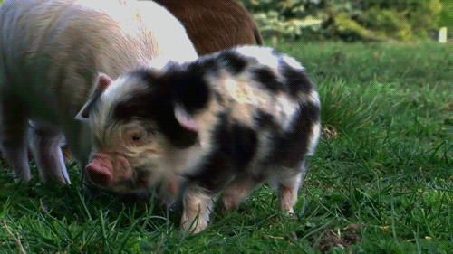
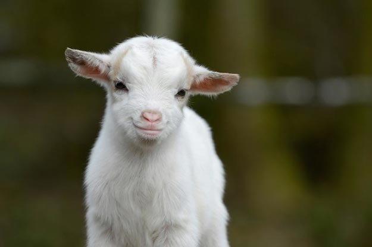
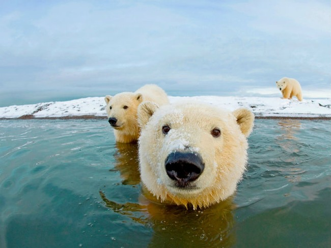
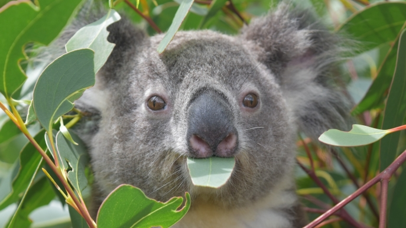

CUTE ANIMALS!

Cute baby pig
- Pigs are intelligent animals.
- Pigs have an excellent sense of smell.
- Like humans, pigs are omnivores.
- Pigs communicate constantly with one another
- Pigs have 15,000 taste buds! Humans have 9,000.
- Pigs appear to have a good sense of direction.

Crazy cute baby goat
- Goats can be taught their name and to come when called
- Each kid has a unique call, and along with its scent.
- Baby goats stand and talk within minutes of being born.
- You can learn more on goats by clicking HERE

Super adorable
Learn more Click HERE

Cute eating koala
Learn more Click HERE